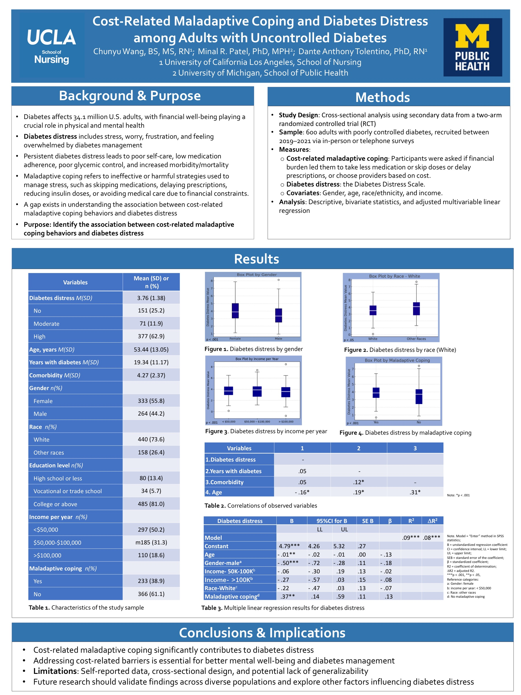

Poster · Western Institute of Nursing · 2025
When the cost of diabetes pushes people into harmful coping, like skipping medication, it may go hand in hand with greater “diabetes distress,” the emotional weight of managing the disease.
Managing diabetes is expensive, and some people cope in harmful ways, such as skipping medications or delaying care to save money. This study looked at whether these cost-related coping behaviors are associated with “diabetes distress,” the stress, worry, and frustration of living with diabetes, among adults with uncontrolled diabetes. Understanding this link can help clinicians spot and support people struggling with both cost and emotional burden.
A cross-sectional analysis examining the association between cost-related maladaptive coping (such as skipping medications, delaying prescriptions, or reducing insulin doses to save money) and diabetes distress among adults with uncontrolled diabetes.
As a cross-sectional study, it describes associations rather than cause and effect.
Financial strain can push people toward harmful shortcuts in care.
Diabetes distress affects self-care and outcomes.
Recognizing cost-related coping can prompt timely support.
